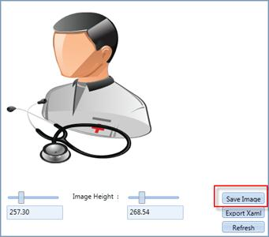
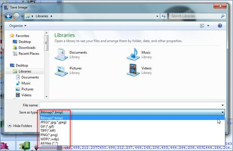

With the help of Vector Image utility demo, the selected image can be exported to various image formats.
· Bitmap
· JPEG
· GIF
· TIF
· PNG
· WDP
Selected Image can be saved by clicking the Save Image button as shown below.

Figure 1184: Save Image
On clicking the Save Image button you will be prompted for a location to save. You can then choose the image format as shown below.

Figure 1185: Export to various formats